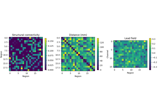
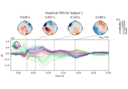

WhoBPyT Examples#
Worked examples showing how to use WhoBPyT to build, fit, and analyse whole-brain models of neuroimaging and neurophysiology data. Most examples reproduce the main analyses of a published paper. Each one can be downloaded as a Python script or a Jupyter notebook using the links at the bottom of the example page.

Getting started: simulate and fit a whole-brain model
Getting started: simulate and fit a whole-brain model

The Role of Recurrent Network Feedback in TMS-EEG Evoked Responses
The Role of Recurrent Network Feedback in TMS-EEG Evoked Responses

Gradients of Excitability and Recurrence Revealed by Stimulation Mapping and Whole-Brain Modelling
Gradients of Excitability and Recurrence Revealed by Stimulation Mapping and Whole-Brain Modelling